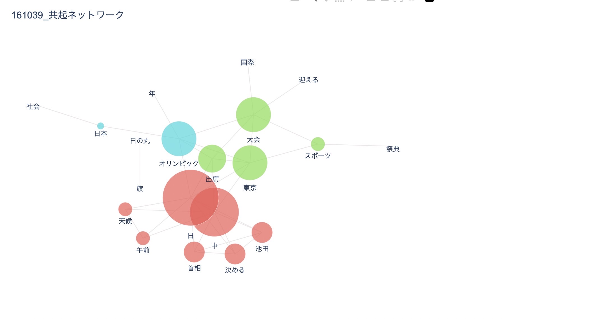
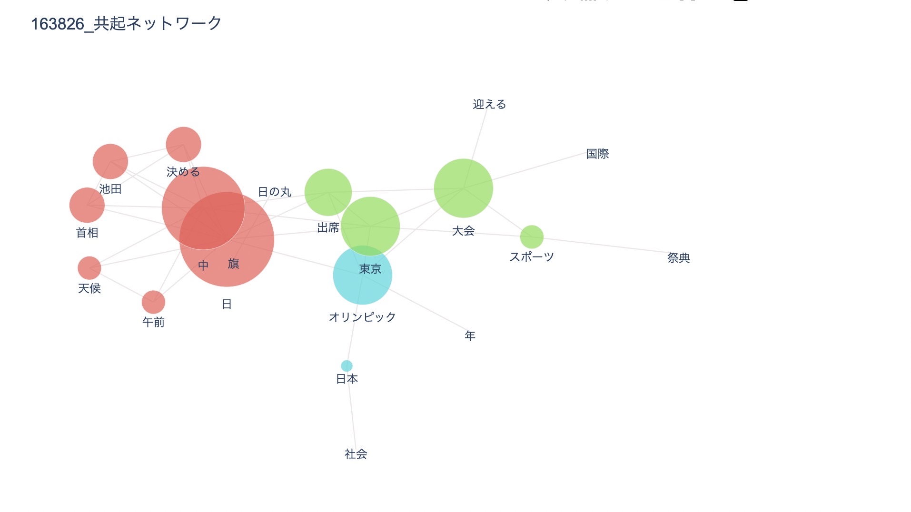
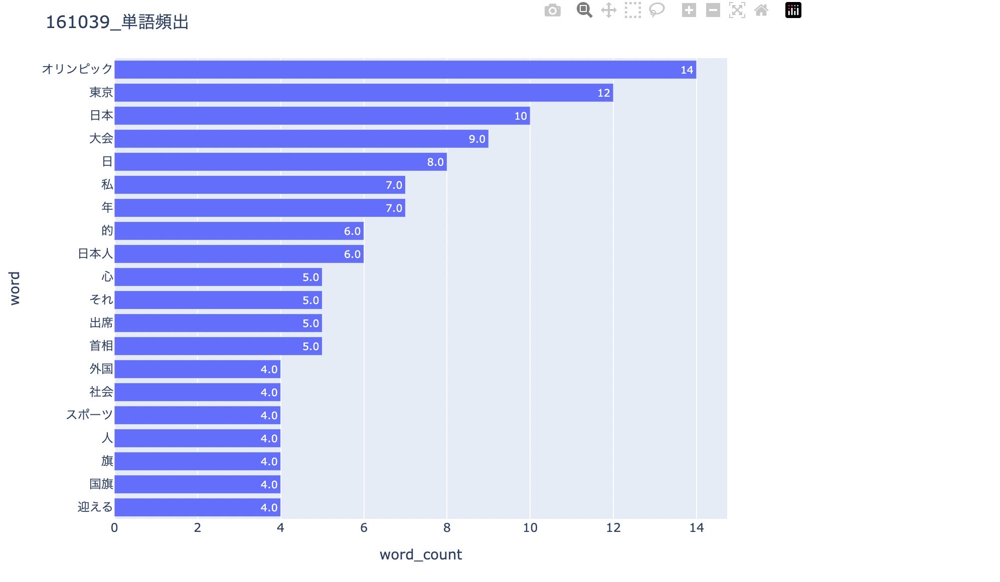
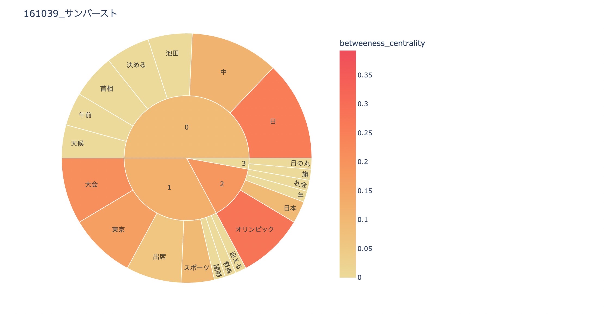

<!DOCTYPE html>
<html lang="ja"></html>
<head>
    <title>第8回 データサイエンス</title>
    <link rel="stylesheet" href="./css/base.css">
</head>
<body>
    <h>分析結果</h>
    <p>1964年</p> <p>2020年</p>
    <p>多く出てきた単語は大方同じだった。「日」「中」「東京」の三つの単語がどちらも頻繁に出ている。<br>
    「日」は、日本・〇日</p>などの単語で使用され、「中」は、日中という単語内で使われていた。てっきりもっと頻出単語に差が出てくると思ったが、そんなことはなく<br>
    同じような情勢だと同じような内容が報道されているということだ。以下にも他のグラフで表示させてみた。
    
     

</body>
